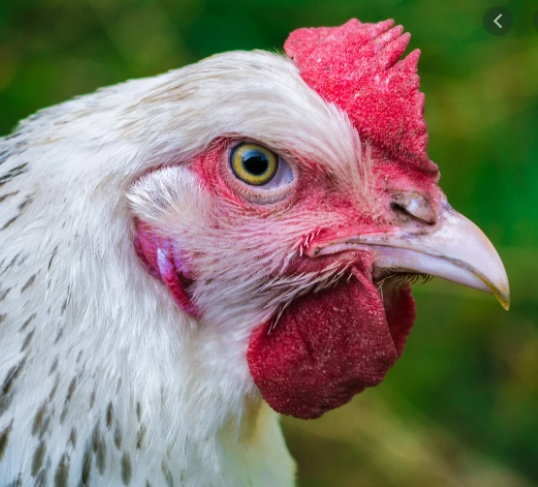

×
Some text in the Modal..
Dropdown menu on hover
Gradients
A repeating linear gradient for a striped bar
Transition
Animation

Mrs. Featherstone
She may be a bit frumpy, but Mrs Featherstone gets the job done. She lays her largish cream-colored eggs on a daily basis. She is gregarious to a fault.
Hen Solo
Though the most recent addition to our flock, Hen Solo is a fast favorite among our laying brood.
Cluck Norris
Every brood has its brawler. Cluck Norris is our feistiest hen, frequently picking fights with other hens about laying territory and foraging space.
Peggy Schuyler
Peggy was our first and friendliest hen. She is the most likely to greet visitors to the yard, and frequently to be found nesting in the coop.